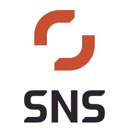
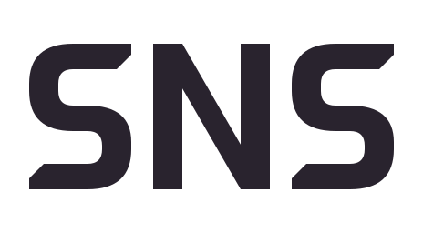

Chrome assets / light surface
16 px / small cut
32 px / small cut
48 px
128 px
Chrome assets / dark surface
16 px
32 px
48 px
128 px
README / light
280 px recommended112 px minimum
README / dark

280 px recommended112 px minimumAlternate lockups / minimum size

Stacked / 80 px
Wordmark / 64 pxSmall / 16 px
Reversed / minimum size
Stacked / 80 px
White / 32 px
Small light / 16 px
Pixel test / 16 px PNG enlarged 8×
Pixel test / 16 px PNG enlarged 8×
Reading and silhouette checks
Rotational symmetry is intentional.
Favicon / cross-theme tile
16 px web favicon